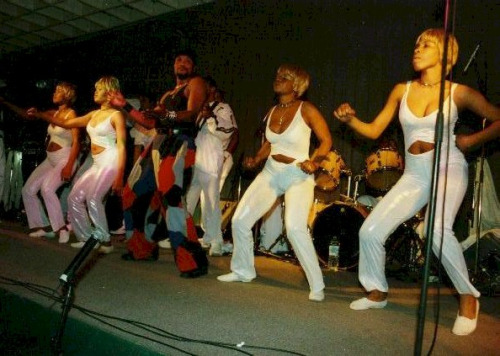

A la República Democràtica del Congo i la República del Congo, la dansa és una expressió fonamental de la vida quotidiana i cultural. S’utilitza en celebracions, rituals, protestes i actes socials. La música i la dansa han estat eines poderoses per a la comunicació i la resistència, especialment en contextos colonials i post-colonials.
Danses principals del país
Ndombolo – Dansa moderna originada a la RDC, vinculada a la música soukous. Coneguda per moviments de malucs ràpids i enèrgics, ha esdevingut molt popular arreu d’Àfrica.

Dansa Ndombolo
Soukous – Més que una dansa, és un gènere musical que inspira moviments àgils, circulars i sensuals. Té arrels en el rumba congolesa i s’ha estès internacionalment.
Dansa Soukous
Les danses congoleses han influenciat nombroses escenes urbanes a l’Àfrica i a la diàspora. Ndombolo, en particular, ha estat adoptada per joves arreu del continent, amb coreografies virals i esdeveniments de ball a xarxes socials. Alhora, aquestes danses mantenen vincles amb la tradició i les arrels comunitàries.
Pas treballat
Tindika Lokito
Aquest pas emblemàtic de la dansa Ndombolo consisteix a moure els malucs de forma circular i intensa mentre es mantenen els genolls lleugerament flexionats. Es realitza amb energia i carisma, i sovint es combina amb girs o moviments de braços.
Impacte cultural
Aquests estils de dansa no només representen entreteniment, sinó també identitat, resistència i comunitat. A les dues Repúbliques del Congo, les danses com el Ndombolo s’han convertit en símbols de creativitat urbana i orgull cultural. Els artistes locals continuen reinterpretant-les i exportant-les a escenaris internacionals.